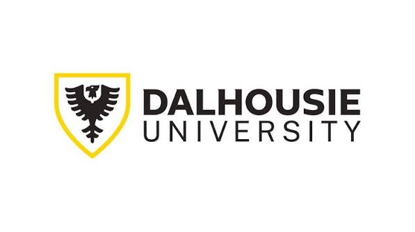

Sep 2026 – Present

Graduate Research Assistant
Dalhousie Transportation Collaboratory (DalTRAC), Dalhousie University
Supervisor: Prof. Dr. Ahsan Habib
- Working on emission and non-emission modelling of vehicles, linking traffic dynamics to vehicle-related runoff pollution in urban surface waters.
Jun 2023 – Jun 2024

Undergraduate Research Assistant
Environmental Engineering Lab, Islamic University of Technology
Supervisor: Prof. Dr. Md. Rezaul Karim
- Designed and conducted field sampling campaigns to investigate microplastic contamination in controlled and open municipal solid waste landfill systems.
- Characterized microplastics using stereomicroscopy, FT-IR, and SEM-EDS to determine particle morphology and polymer composition.
- Performed statistical analyses using Python and R to assess microplastic abundance, migration pathways, and ecological risks.